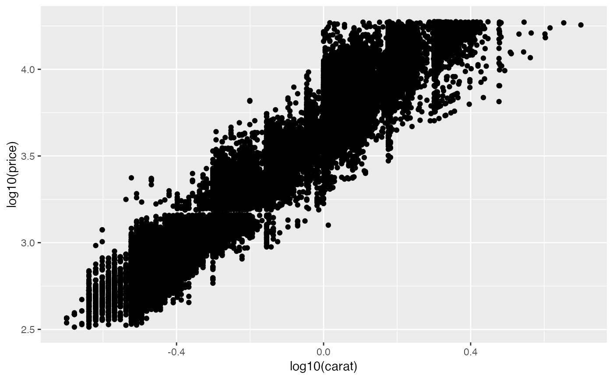
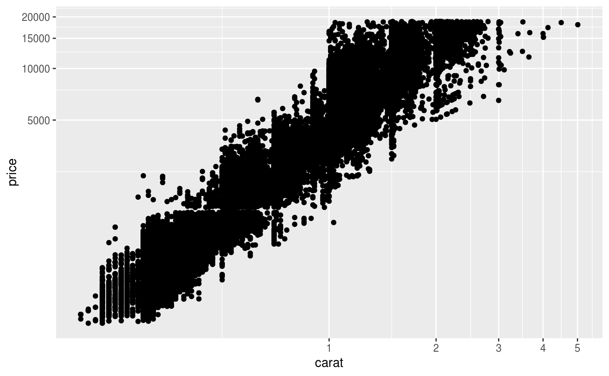
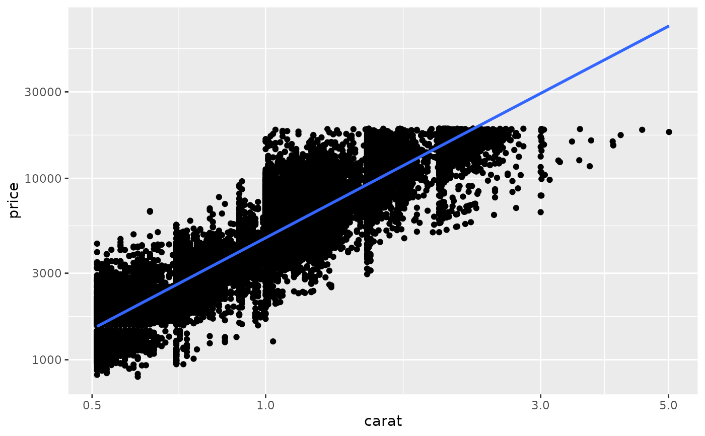
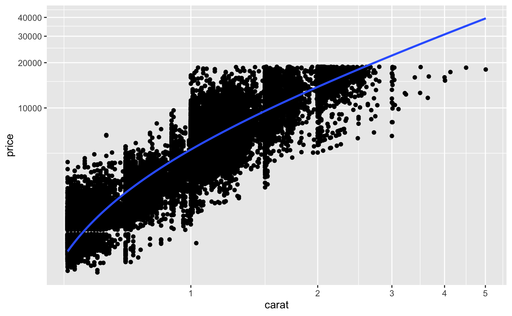
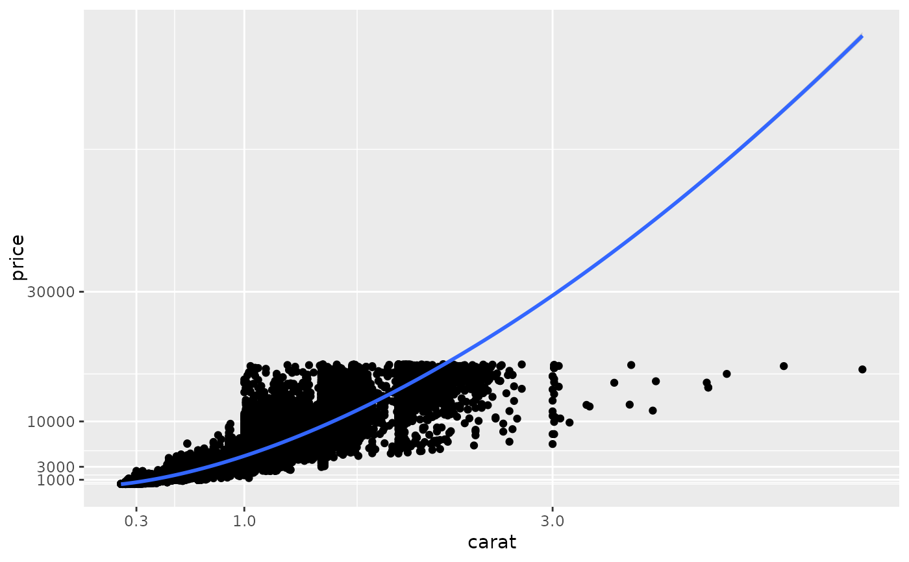
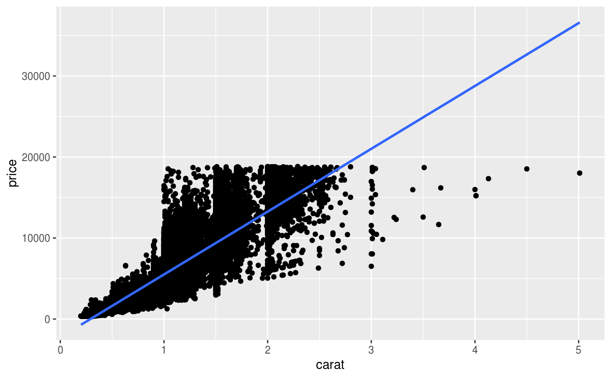
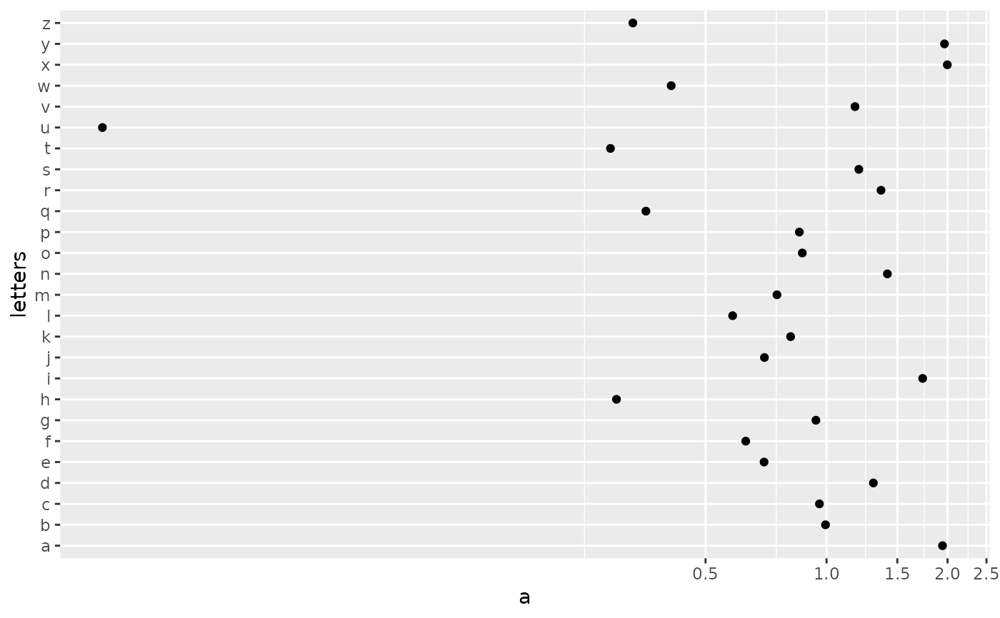
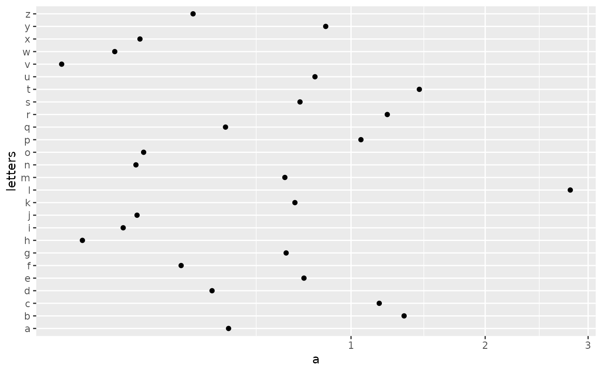

coord_trans() is different to scale transformations in that it occurs after
statistical transformation and will affect the visual appearance of geoms - there is
no guarantee that straight lines will continue to be straight.
Usage
coord_trans(
x = "identity",
y = "identity",
xlim = NULL,
ylim = NULL,
limx = deprecated(),
limy = deprecated(),
clip = "on",
expand = TRUE
)Arguments
- x, y
Transformers for x and y axes or their names.
- xlim, ylim
Limits for the x and y axes.
- limx, limy
![[Deprecated]](figures/lifecycle-deprecated.svg) use
use xlimandyliminstead.- clip
Should drawing be clipped to the extent of the plot panel? A setting of
"on"(the default) means yes, and a setting of"off"means no. In most cases, the default of"on"should not be changed, as settingclip = "off"can cause unexpected results. It allows drawing of data points anywhere on the plot, including in the plot margins. If limits are set viaxlimandylimand some data points fall outside those limits, then those data points may show up in places such as the axes, the legend, the plot title, or the plot margins.- expand
If
TRUE, the default, adds a small expansion factor to the limits to ensure that data and axes don't overlap. IfFALSE, limits are taken exactly from the data orxlim/ylim. Giving a logical vector will separately control the expansion for the four directions (top, left, bottom and right). Theexpandargument will be recycled to length 4 if necessary. Alternatively, can be a named logical vector to control a single direction, e.g.expand = c(bottom = FALSE).
Details
Transformations only work with continuous values: see
scales::new_transform() for list of transformations, and instructions
on how to create your own.
See also
The coord transformations section of the online ggplot2 book.
Examples
# \donttest{
# See ?geom_boxplot for other examples
# Three ways of doing transformation in ggplot:
# * by transforming the data
ggplot(diamonds, aes(log10(carat), log10(price))) +
geom_point()

# * by transforming the scales
ggplot(diamonds, aes(carat, price)) +
geom_point() +
scale_x_log10() +
scale_y_log10()
# * by transforming the coordinate system:
ggplot(diamonds, aes(carat, price)) +
geom_point() +
coord_trans(x = "log10", y = "log10")

# The difference between transforming the scales and
# transforming the coordinate system is that scale
# transformation occurs BEFORE statistics, and coordinate
# transformation afterwards. Coordinate transformation also
# changes the shape of geoms:
d <- subset(diamonds, carat > 0.5)
ggplot(d, aes(carat, price)) +
geom_point() +
geom_smooth(method = "lm") +
scale_x_log10() +
scale_y_log10()
#> `geom_smooth()` using formula = 'y ~ x'

ggplot(d, aes(carat, price)) +
geom_point() +
geom_smooth(method = "lm") +
coord_trans(x = "log10", y = "log10")
#> `geom_smooth()` using formula = 'y ~ x'

# Here I used a subset of diamonds so that the smoothed line didn't
# drop below zero, which obviously causes problems on the log-transformed
# scale
# With a combination of scale and coordinate transformation, it's
# possible to do back-transformations:
ggplot(diamonds, aes(carat, price)) +
geom_point() +
geom_smooth(method = "lm") +
scale_x_log10() +
scale_y_log10() +
coord_trans(x = scales::transform_exp(10), y = scales::transform_exp(10))
#> `geom_smooth()` using formula = 'y ~ x'
#> Warning: NaNs produced
#> Warning: NaNs produced
#> Warning: NaNs produced
#> Warning: NaNs produced
#> Warning: NaNs produced
#> Warning: NaNs produced
#> Warning: NaNs produced
#> Warning: NaNs produced
#> Warning: NaNs produced
#> Warning: NaNs produced
#> Warning: NaNs produced
#> Warning: NaNs produced

# cf.
ggplot(diamonds, aes(carat, price)) +
geom_point() +
geom_smooth(method = "lm")
#> `geom_smooth()` using formula = 'y ~ x'

# Also works with discrete scales
set.seed(1)
df <- data.frame(a = abs(rnorm(26)),letters)
plot <- ggplot(df,aes(a,letters)) + geom_point()
plot + coord_trans(x = "log10")

plot + coord_trans(x = "sqrt")

# }